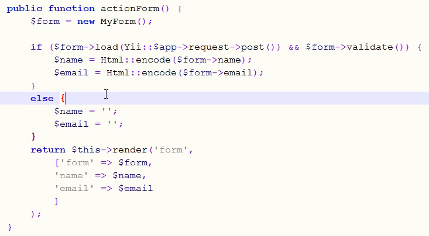
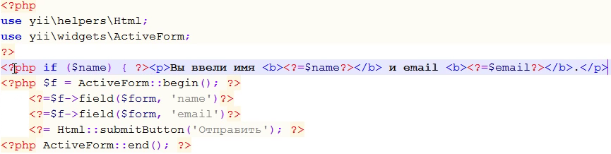

Модели форм - это обычные модели, такие же как и модели других сущностей сайта.
Начальный шаблон для класса модели примерно такой:
namespace app\models;
use Yii;
use yii\base\Model;
class MyForm extends Model
{
public $name;
public $email;
public $text;
public $verifyCode;
...
}
Валидация данных
Для валидации входящих данных, надо перегрузить метод rules(). Данный метод должен возвращать массив с правилами валидации:
public function rules()
{
return [
// name, email, subject and body - all are required
[['name', 'email', 'subject', 'body'], 'required'],
// email has to be a valid email address
['email', 'email'],
// verifyCode needs to be entered correctly
['verifyCode', 'captcha'],
];
}
Здесь правила такие прописаны:
Существует и куча других правил валидации, надо смотреть документацию.
Выводимые в браузер названия полей
По-умолчанию поля формы будут иметь названия такие же как в коде. Чтобы задать правильные выводимые имена полей, нужно перегрузить метод attributeLabels():
public function attributeLabels()
{
return [
'verifyCode' => 'Verification Code',
];
}
Данный метод должен вернуть массив с именами полей и соответствующими им строками, видимыми в веб-интерфейсе.
Примерная структура экшена при работе с моделью формы
Простейший экшен выглядит примерно так:

В данном экшене нет сохранения данных формы в БД, а просто демонстрируется использование модели формы. Если пользователь еще ничего не вводил, выведется обычная пустая форма. Если пользователь ввел значения полей, будет отрисована та же форма, но сверху будет сообщение со значениями полей.
Файл вида для такого экшена выглядит так:
